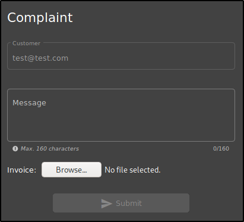

Broken Access Control Walktrough
Here I will show an example about Broken Access Control:
first of all, we should be logged into some account
Let's suppose we want to leave a feeback as another user.

Now we are logged as a
test@test.com,
so the customer field is "
test@test.com
"
But if we want to change that?
We should try to use "Inspect element" to get on that:
so we can change elements in a page!!!